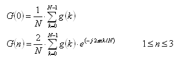
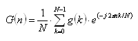
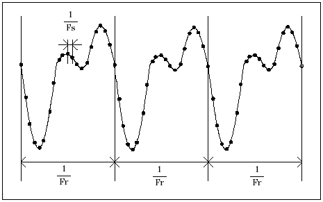

DSP_DFT
This API computes the DC component, relative frequency, second harmonic, and third harmonic of the specified array.
The
DSP_DFT API transforms the src data and returns the results
to result. The data is transformed as shown in the following
equations:
For not-complex data processing:

where
g(k): 0≤ k ≤ N - 1
G(n): 1 ≤ n ≤ 3
For complex data processing:

where
g(k): 0≤ k ≤ N - 1
G(n): 0 ≤ n ≤ 3
Note
that the G(n): (1≤ n ≤ 3) of not-complex data processing is double the
G(n): (1≤ n ≤ 3) of complex data processing.
The relative frequency Fr is defined as follows:

where Fs is the sampling frequency.

The results are stored in result in the following order:
[0].real: DC component or real part of DC component (for complex)
[0].imag: Zero or imaginary part of DC component (for complex)
[1].real: Cosine component of relative frequency
[1].imag: Sine component of relative frequency
[2].real: Cosine component of relative frequency second harmonic
[2].imag: Sine component of relative frequency second harmonic
[3].real: Cosine component of relative frequency third harmonic
[3].imag: Sine component of relative frequency third harmonic
If you need
to calculate all frequency bins, you can use the DSP_FFT API. Please be aware
that you need a valid license for Xpress data mode if the size of the input array is not a power
of two.
This API is defined in the header file /opt/hp93000/soc/prod_com/include/MAPI/libdsp.h.
Syntax
DSP_DFT(ARRAY_I& src, ARRAY_COMPLEX& result, INT rel_freq); DSP_DFT(INT *src, COMPLEX *result, INT size, INT rel_freq); DSP_DFT(ARRAY_D& src, ARRAY_COMPLEX& result, INT rel_freq); DSP_DFT(DOUBLE *src, COMPLEX *result, INT size, INT rel_freq); DSP_DFT(ARRAY_COMPLEX& src, ARRAY_COMPLEX& result, INT rel_freq); DSP_DFT(COMPLEX *src, COMPLEX *result, INT size, INT rel_freq);
I/O |
Parameter |
Description / Range |
|---|---|---|
I |
src |
Source array |
O |
result |
Computed results 4 ≤ size of result |
I |
size |
Number of elements to be processed 1 ≤ size ≤ 2097152 size ≤ (size of source array) |
I |
rel_freq |
Number of measured signal periods, which is used to calculate the relative frequency For complex data types, - (size / 2) + 1 ≤ rel_freq ≤ - 1 or 1 ≤ rel_freq ≤ (size / 2) - 1 For other data types, 1 ≤ rel_freq ≤ (size / 2) - 1 |
Example
DOUBLE time_array[256]; COMPLEX array2[5]; . . DSP_DFT(time_array, array2, 256, 2);
DSP_DFT
computes the DC component, relative frequency, second harmonic, and third harmonic of the first
256 elements of the array time_array. The relative frequency
Fr is as
follows:
Fr = Fs × 2/256
The results are returned to COMPLEX array
array2 as follows:
[0].real: |
DC component |
[0].imag: |
Zero |
[1].real: |
Cosine component of Fr |
[1].imag: |
Sine component of Fr |
[2].real: |
Cosine component of Fr 2nd harmonic |
[2].imag: |
Sine component of Fr 2nd harmonic |
[3].real: |
Cosine component of Fr 3rd harmonic |
[3].imag: |
Sine component of Fr 3rd harmonic |
Functional changes
- Introduced before SmarTest 6.3.2